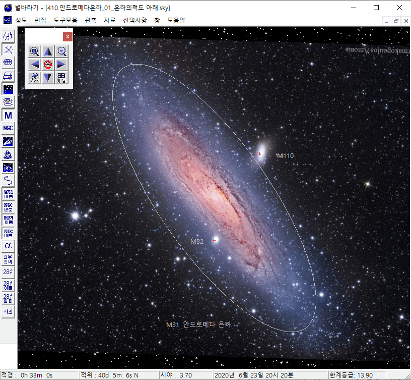
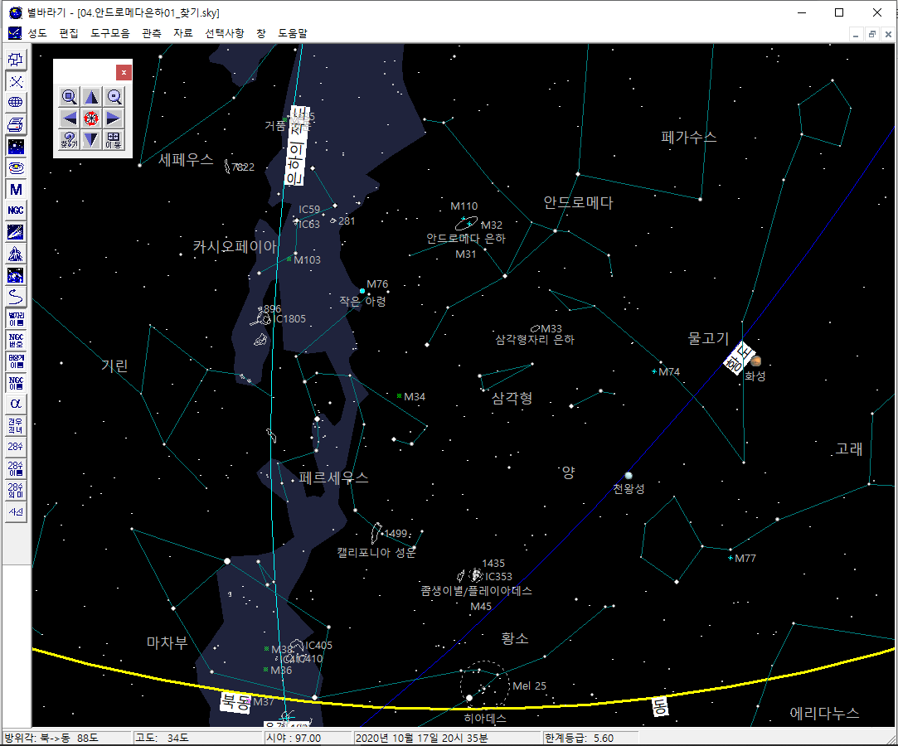
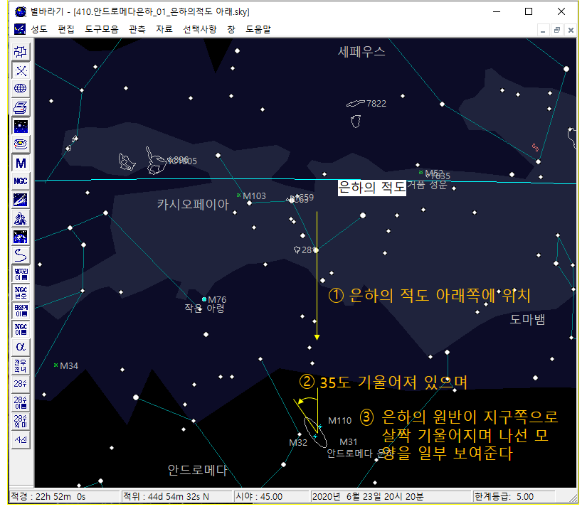
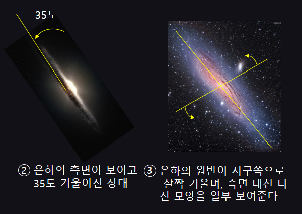

안드로메다 은하는 우주를 배경으로 하는 많은 이야기 속에 등장한다. 일본의 애니메이션 은하철도 999의 종착지도,
가디언즈 오브 갤럭시의 배경도 안드로메다 은하이다 (M31로 시작하는 좌표가 많이 등장한다).
먼저 아름다운 은하의 모습을 감상해 보자. 나선팔의 검은 그림자도 확인하고,
안드로메다 은하의 딸린 은하인 M32, M110도 찾아 보자. 이미지를 클릭하면 전체화면으로 볼 수 있다.

Image Credit & Copyright: Farmakopoulos Antonis
맨눈 관측이 가능하다
안드로메다 은하는 인류가 맨눈으로 볼 수 있는 가장 먼 곳에 있는 대상이다.
안드로메다 은하까지의 거리는 250만년이다. 즉 우리는 250만년 전에 출발한 안드로메다 은하의 빛을 보는 것이다.
250만년 전이면 인류의 조상으로 생각되는 오스트랄로피테쿠스가 뛰어 다니던 시기이다.
멀리서 온 귀한 손님인만큼 직접 맞이하기는 쉽지 않다. 다음 순서를 추천한다.

평소에 별자리를 익혀 둔다. 별자리가 어려우면 행성의 위치라도 종종 봐 두고 별바라기에서 위치를 확인해 둔다. 금성/목성/토성은 서울 하늘에서도 잘 보인다.
관측 장소를 찾는다. 천문 관측, 은하수 관측 장소 등으로 검색하면 된다.
관측 장소까지 이동 수단도 준비한다.
가을철 별자리를 익히고, 안드로메다 은하의 위치를 확인해 둔다. 그림 참조
구름 없는 맑은 가을 날을 기다린다.
그리고, 사진에서 보았던 모습은 잊자. 맨눈으로는 그냥 아주 작은 구름 한 조각처럼 보인다.
관측 장소에 도착했다면, 반드시 모든 불을 끄고 10분 이상 암적응을 한다. 암적응 전과 후의 하늘은 전혀 다른 모습이다.
이제 그동한 쌓아 놓은 관측 경험을 십분 활용하여 안드로메다 은하를 찾아 본다.
처음엔 잘 알아 보지 못할 수도 있다. 그냥 별 또는 퉁퉁 부은 별처럼 보일 수도 있다.
만약 쌍안경이 있다면 활용해 보자. 훨씬 더 멋진 모습을 볼 수 있다.
혹, 안드로메다를 못 찾더라도 실망하지 말자.
조금만 더 기다리면 '좀생이별/플레이아데스'가 지평선 위로 떠오르는 것을 볼 수 있다.
안드로메다 보다 더 멋지고, 누구나 맨눈으로 볼 수 있다.
우리 은하의 이웃
안드로메다 은하는 우리 은하와 매우 가까운 이웃이다. 우주 공간에서 이웃 은하가 어떤 모습으로 있을지 상상해 보는 것도 재미있다.
아래 그림들을 보면 다음 사항을 알 수 있다.
안드로메다 은하가 우리 은하의 적도면 아래에 위치한다.
은하의 장축이 반시계 방향으로 35도 기울어져 있다.
은하의 원반면이 지구쪽으로 살짝 기울어져 있어 은하의 측면 대신 나선 모양이 일부 보인다.


위 그림은 지구에서 바라보는 안드로메다 은하 모습이다.
시점을 조금 바꾸어서 우주 멀리서 보면 아래와 같은 모습으로 보일 것이다.
위 그림들과 아래 그림에서 사용하는 번호는 서로 같은 내용을 가리킨다.
두 은하 모두 나선 은하로 생긴 모습도 비슷하며, 비스듬히 누워서 서로를 바라보는 것까지 닮아 있다.
따라서, 안드로메다에 있는 생명체가 우리 은하를 관측한다면,
우리가 보는 안드로메다 은하와 비슷한 모습으로 절반 정도의 크기로 보일 것이다.